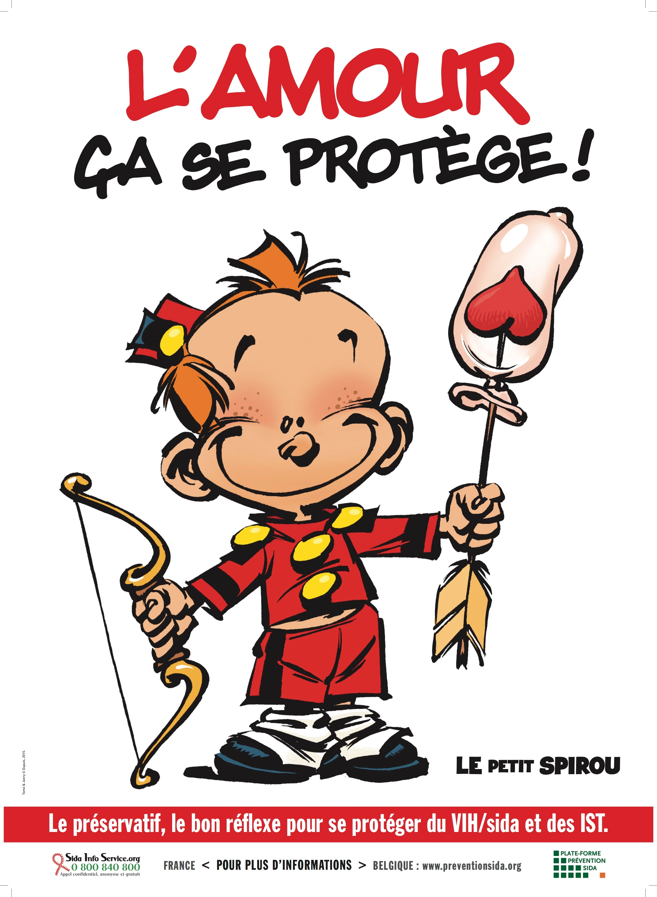

-
La nuit de l'info
Durant cette Nuit de l’Info, qui marquera également la 34ème journée mondiale de lutte contre le SIDA (tous les 1er Décembre), nous sommes invités à créer une application web qui servira à éduquer les jeunes générations afin de les aider à prendre en main leur sexualité de façon décomplexée et d’ainsi contribuer à la lutte contre les préjugés et les IST.
-

La lutte contre les MST
Aujourd’hui, grâce aux avancées des traitements, les personnes atteintes du VIH sous trithérapie ne développent plus le SIDA, ont une durée de vie et une qualité de vie normale. Elles n’ont plus de risque de contaminer leur(s) partenaire(s) tant qu’ils et elles suivent leur traitement. Il existe également un traitement préventif du VIH (la PrEP) et un traitement d’urgence (le TPE) disponible aux services d’urgences en cas de prise de risque involontaire.